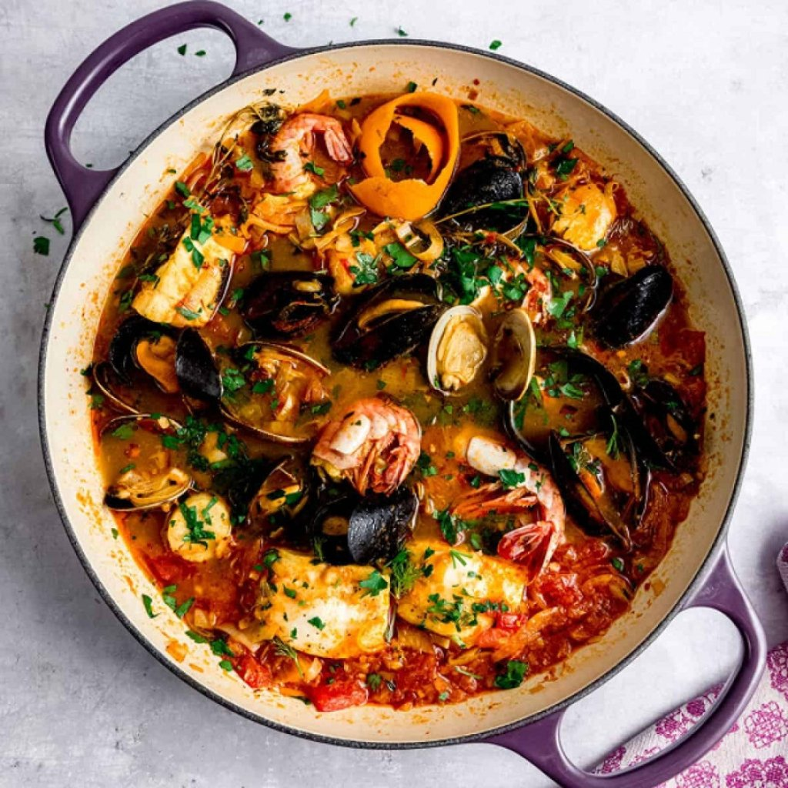
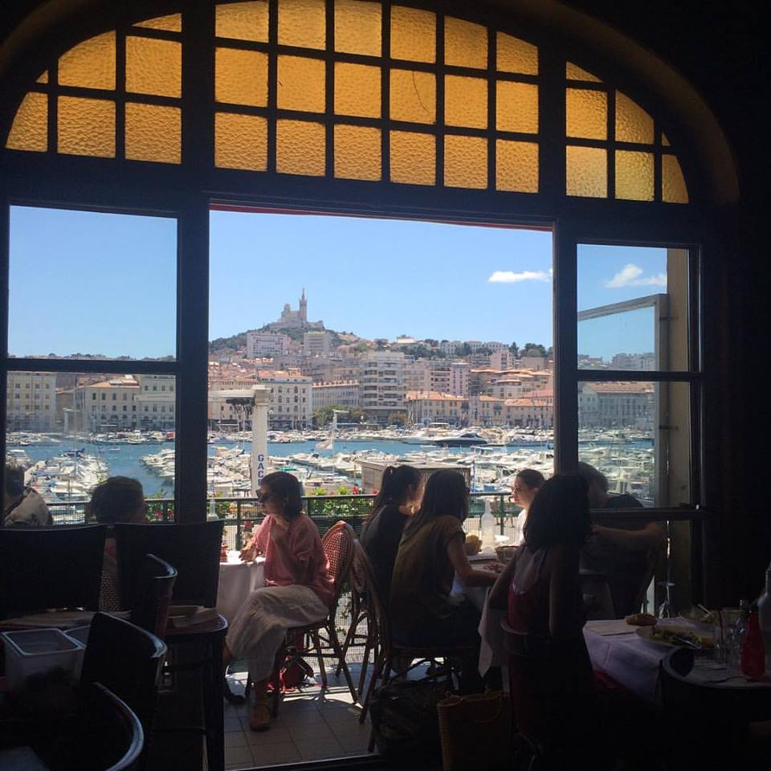
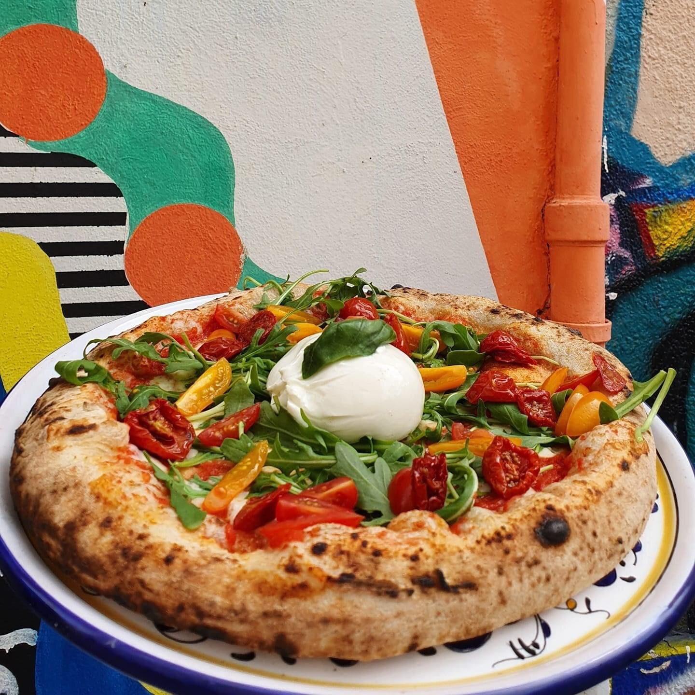
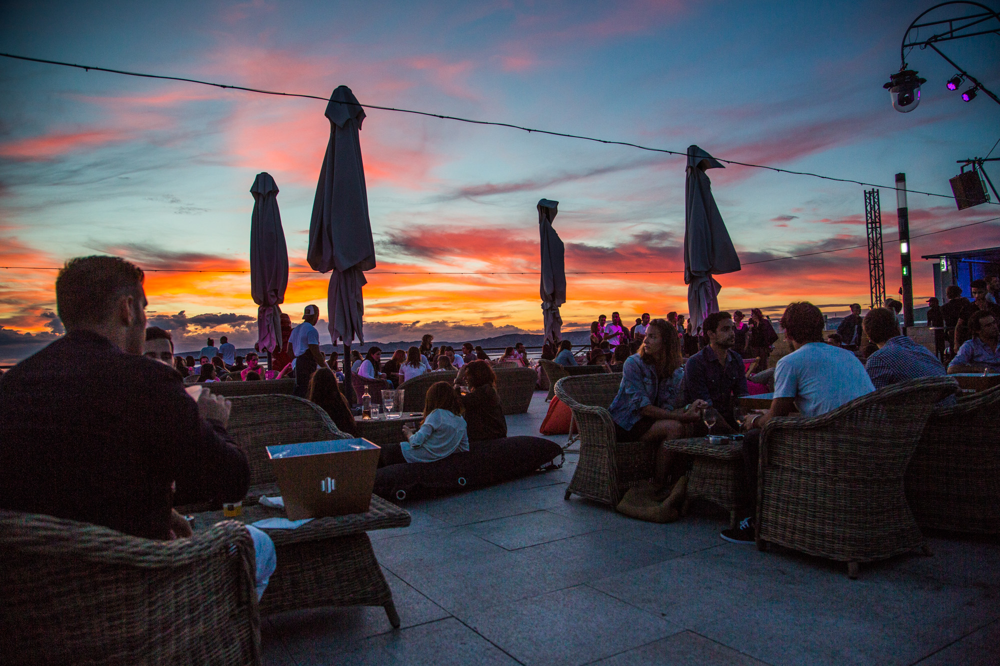

Tradition
Le Miramar
Erlebe den Geschmack des Meeres. Hier wird die Bouillabaisse noch nach altem Geheimrezept zubereitet – direkt am Vieux Port mit Blick auf die Fischerboote.
Von der legendären Bouillabaisse bis zu versteckten Jazz-Bars.

Erlebe den Geschmack des Meeres. Hier wird die Bouillabaisse noch nach altem Geheimrezept zubereitet – direkt am Vieux Port mit Blick auf die Fischerboote.

Ein Hauch von 1920er Jahren. In dieser Bar schmeckt der Pastis am besten, während im Hintergrund sanfter Jazz spielt. Ein echter Insider-Tipp für Genießer.

Marseille liebt Pizza! Bei Étienne gibt es keinen Schnickschnack, sondern ehrliche, holzofengebackene Pizza in den urigen Gassen des Le Panier Viertels.

Lust auf Tanzen? Das R2 bietet die spektakulärste Terrasse der Stadt. Feiere über den Dächern und schaue zu, wie die großen Fähren im Hafen anlegen.